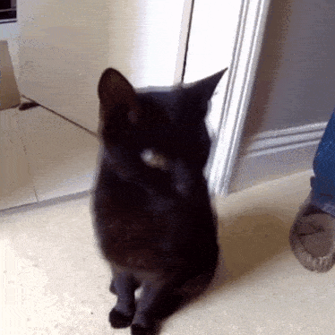

Hello!! Welcome to my little nook of the internet!!

mildly fun facts!
This is my silly little website/blog where I'll be posting what I'm up to,
projects or just
random thoughts etc..
:^)
I created this website just because the YouTube algorithim
kept harrashing me with indie webpage videos and I eventually caved and started binge
surfing webrings sooooo here we are :D
- I'm a computer science student at Trent University.
- I like to hangout with my girlfriend and my cat Gigi in my free time (very allergic to her btw).
- I like to learn random skills for fun more on that here!
- I'm a volunteer campus paramedic and work as dispatcher for my university!
- Being sweaty is the bane of my existance D:<
¡Projects!
Journal Entries
- Well there isn't really isn't all that much to put here to be honest lol (Sunday, June 22, 2025)